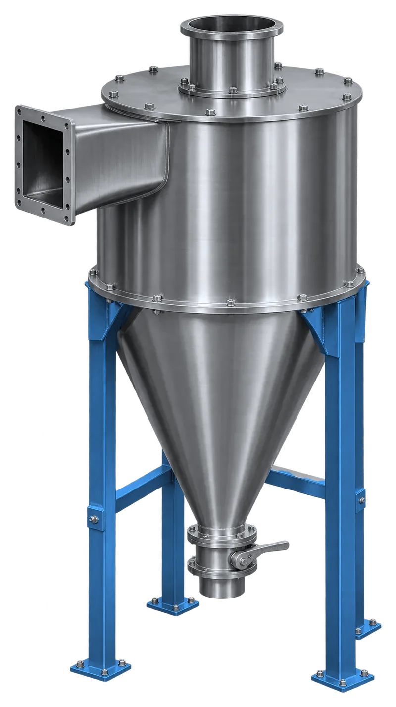

Blowers & ventilatoren
Breng lucht in beweging.





Componenten
8 componentgroepen voor industriële luchttechniek en solids processing, samen 32 uitvoeringen. Beweeg over een groep en kijk erin.
Breng lucht in beweging.
Van productterugwinning tot voorafscheiding.
Vang stof af waar het vrijkomt.
Voer poeders en granulaten gecontroleerd af.
Verbind de stappen in uw proces.
Maak van een big bag een gecontroleerde processtap.
Open en sluit een processtroom op het juiste moment.